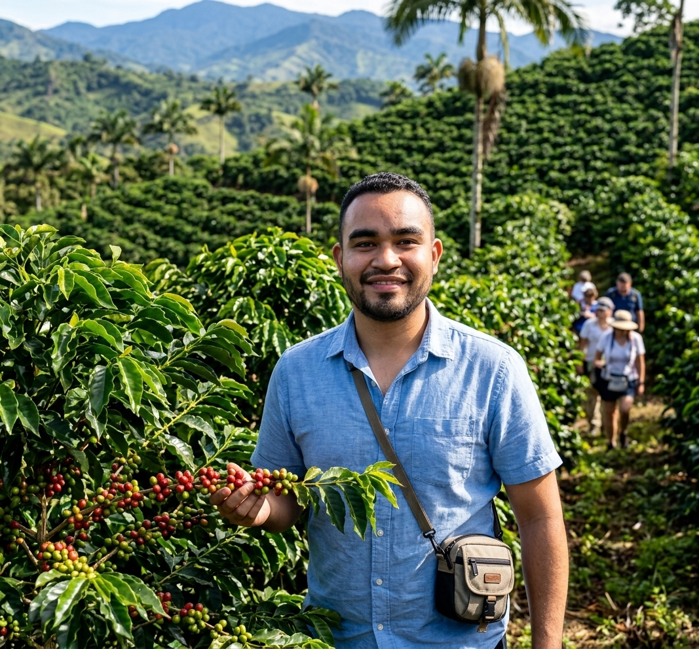
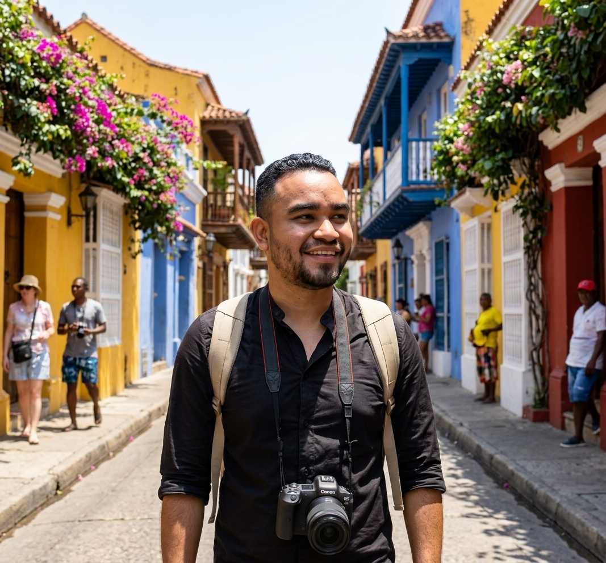
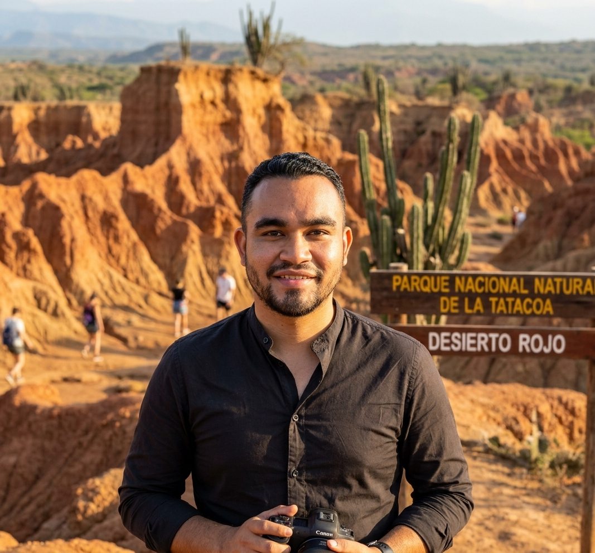
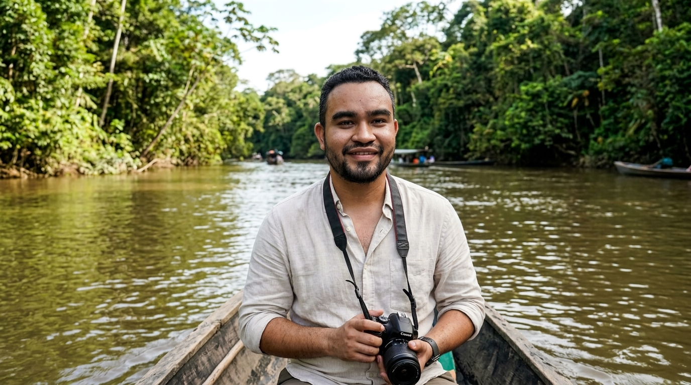

Destinos Mágicos por Descubrir
Conoce los detalles, el clima y la cultura de los lugares más visitados. Prepárate para una aventura inolvidable con Dan.
1. San Andrés Islas
Famosa por sus playas de arena blanca, aguas cristalinas y un clima cálido durante todo el año. Disfruta del mar de los siete colores, el buceo y la mejor gastronomía caribeña.
2. Eje Cafetero

El corazón montañoso del país. Esta región te ofrece paisajes verdes interminables, clima templado y la experiencia única de recorrer las fincas donde se cultiva el mejor café del mundo, además de relajarte en termales naturales.
3. Cartagena de Indias

Historia, cultura y arquitectura colonial se unen en la Ciudad Amurallada. Un destino mágico donde cada callejón cuenta una historia, ideal para caminar al atardecer y disfrutar de sus hermosas playas cercanas.
4. Desierto de la Tatacoa

Un paisaje árido espectacular de formaciones rocosas de color ocre y gris. Es el escenario ideal para los amantes de la fotografía, la caminata y la observación astronómica gracias a sus cielos limpios y despejados.
5. La Inmensa Amazonía

Para los verdaderos amantes de la aventura y la ecología. La Amazonía te sumerge en la selva tropical más grande del mundo, ofreciéndote biodiversidad pura, expediciones por el río y un contacto enriquecedor con comunidades indígenas.
6. Santa Marta y el Parque Tayrona
El lugar donde la exuberante selva y la majestuosa Sierra Nevada se encuentran directamente con el mar Caribe. Un santuario de naturaleza perfecta para el senderismo, descubrir ruinas arqueológicas y relajarse en playas vírgenes.